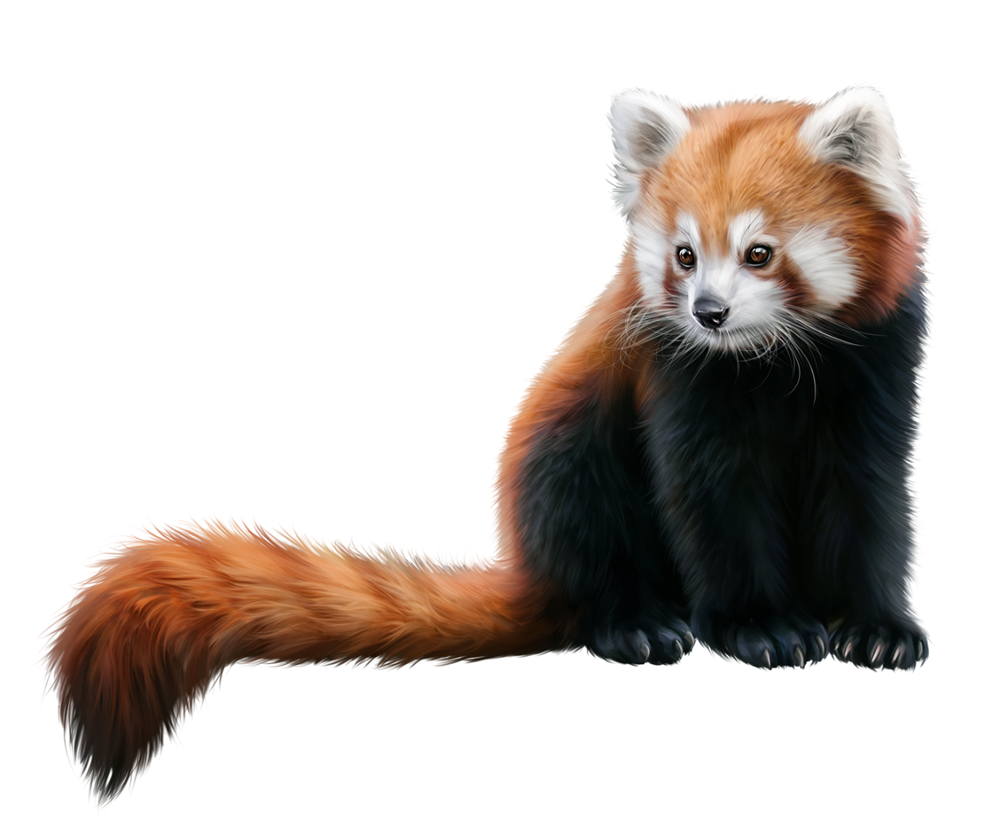
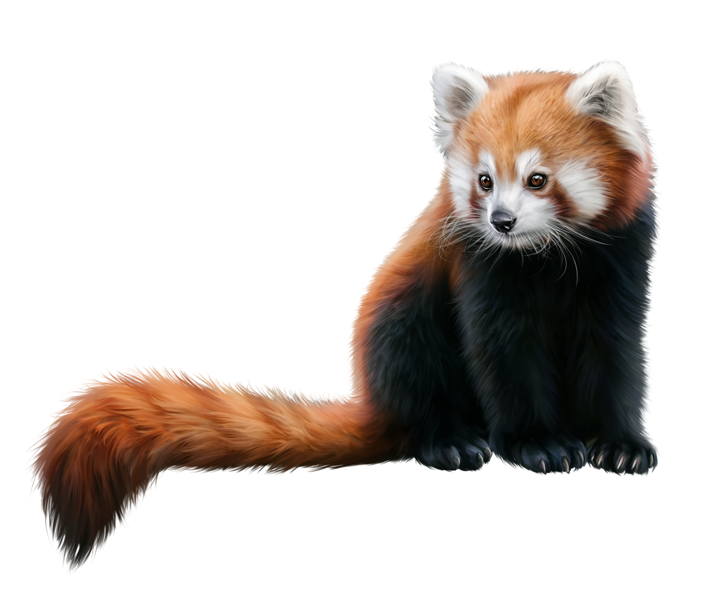
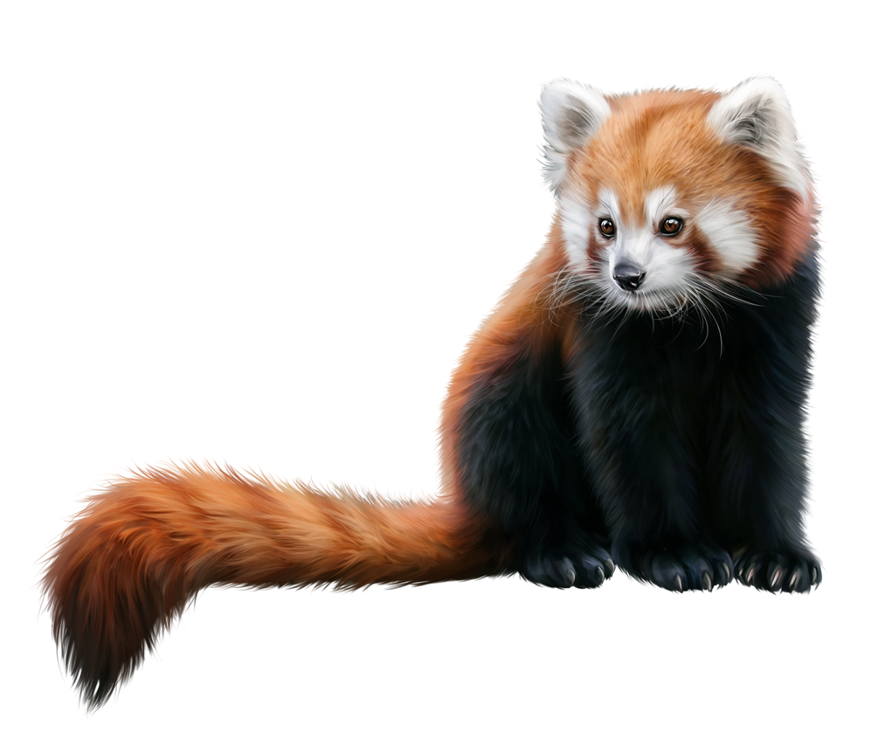
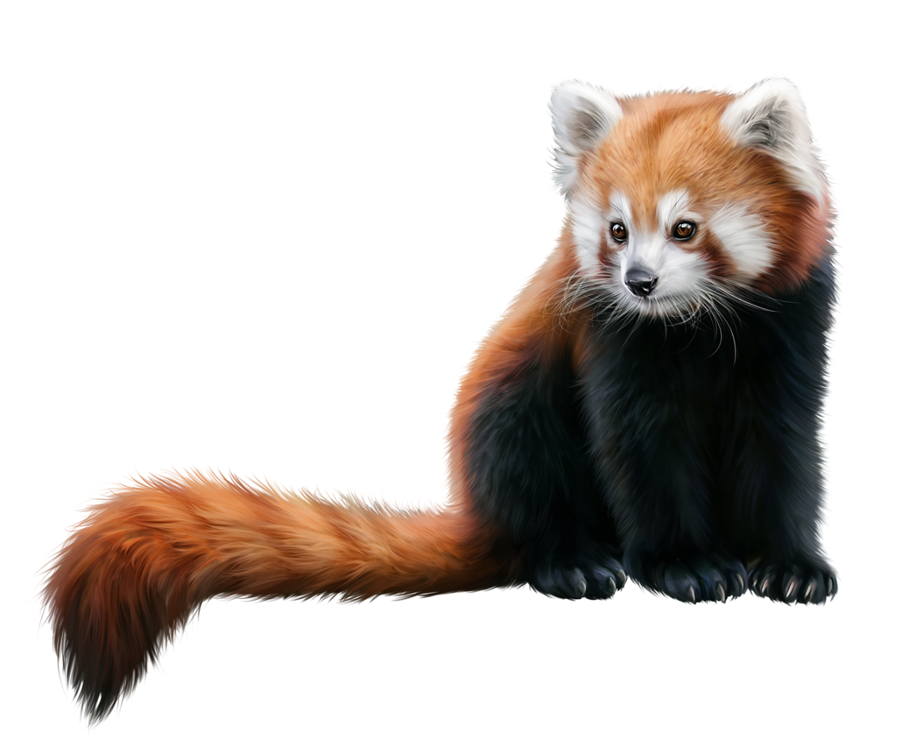

RED PANDA
 

Red pandas are small, tree-dwelling mammals native to the eastern Himalayas and southwestern China. They are known for their striking red fur and bushy tails. Despite their name, red pandas are not closely related to giant pandas. Instead, they belong to their own unique family, Ailuridae.
Red pandas have a body length of 50 to 64 cm and a tail length of 28 to 59 cm. They weigh between 3.2 to 6.2 kg. Their fur is reddish-brown with a lighter face and darker belly. They have sharp claws and a semi-retractable thumb to help them climb trees.
Red pandas are small, tree-dwelling mammals native to the temperate forests of the Himalayas, including Bhutan, Nepal, India, Myanmar, and China. They thrive in areas with a bamboo understory and primarily eat bamboo leaves, fruits, acorns, roots, and eggs. Mostly solitary except during mating season, red pandas are most active at dawn and dusk. They face threats from habitat loss, poaching, and inbreeding, making conservation crucial for their survival.
The red panda's coat is red or orange-brown with a black belly and legs, white markings on the face, and a bushy tail with red and buff rings. This color pattern camouflages them in their habitat. Their dense undercoat is fluffy, and the longer guard hairs on their back help protect them from the cold. The soles of their paws are covered in fur, aiding in walking on snow.
Red pandas have a small head with a reduced snout, triangular ears, and nearly evenly lengthed limbs. They measure 51–63.5 cm (20.1–25.0 in) in body length with a 28–48.5 cm (11.0–19.1 in) tail. They weigh between 3.2–15 kg (7.1–33.1 lb), depending on the subspecies and sex. Their curved, semi-retractile claws and flexible joints help them climb trees, while their non-prehensile tail aids in balance.
The red panda's "false thumb," an extended wrist bone, helps them grip bamboo stalks. This feature is shared with the giant panda but is less developed. Their skull is wide, with a robust lower jaw, though they have smaller chewing muscles due to their diet of leaves and stems. Their digestive system is simple, suited to their herbivorous diet.
The red panda (Ailurus fulgens) was named in 1825 by Frederic Cuvier. Although Thomas Hardwicke described it in 1821, his paper was published in 1827. In 1902, Oldfield Thomas described the Chinese red panda (Ailurus fulgens styani) from Sichuan.
The red panda is the only species in the genus Ailurus, traditionally divided into two subspecies: the Himalayan red panda (A. f. fulgens) and the Chinese red panda (A. f. styani). A 2020 genetic analysis suggested these subspecies should be distinct species, with the Siang River as their boundary.
Originally placed in the family Procyonidae with raccoons, the red panda was also thought to be related to the giant panda. In 1982, it was classified in its own family, Ailuridae. Later genetic studies placed it within the clade Musteloidea, alongside Procyonidae, Mustelidae, and Mephitidae.
The family Ailuridae evolved in Europe around 25 to 18 million years ago. Early members like Amphictis and Simocyon had teeth adapted for a carnivorous diet. The puma-sized Simocyon, a tree-climber, shared a "false thumb" with modern red pandas. Advanced ailurids, or "true" red pandas, appeared later. Magerictis from Spain is the earliest known true panda. Later species include Pristinailurus bristoli and Parailurus, likely omnivores. The modern genus Ailurus, dating from the Pleistocene, adapted to a bamboo diet with molar-like premolars and elevated cusps.
In 2017, the full genome of the red panda was sequenced, revealing high genetic diversity. Comparisons with the giant panda genome showed similarities in limb development genes related to their false thumbs and adaptations for a bamboo diet. Despite their carnivorous digestive systems, both pandas reactivated taste receptor genes for detecting bitterness, though the specific genes differ.
A red panda lies sleeping on a high branch of a tree, with tail stretched out behind and legs dangling on each side of the branch.
The red panda is difficult to observe in the wild, and most studies on its behaviour have taken place in captivity. The red panda appears to be both nocturnal and crepuscular, sleeping in between periods of activity at night. It typically rests or sleeps in trees or other elevated spaces, stretched out prone on a branch with legs dangling when it is hot, and curled up with its hindlimb over the face when it is cold. It is adapted for climbing and descends to the ground head-first with the hindfeet holding on to the middle of the tree trunk. It moves quickly on the ground by trotting or bounding.
The red panda is largely herbivorous and feeds primarily on bamboo, mainly the genera Phyllostachys, Sinarundinaria, Thamnocalamus and Chimonobambusa. It also feeds on fruits, blossoms, acorns, eggs, birds and small mammals. Bamboo leaves may be the most abundant food item year-round and the only food they can access during winter. In Wolong National Nature Reserve, leaves of the bamboo species Bashania fangiana were found in nearly 94 per cent of analysed droppings, and its shoots were found in 59 per cent of the droppings found in June.
At least seven different vocalisations have been recorded from the red panda, comprising growls, barks, squeals, hoots, bleats, grunts and twitters. Growling, barking, grunting and squealing are produced during fights and aggressive chasing. Hooting is made in response to being approached by another individual. Bleating is associated with scent-marking and sniffing. Males may bleat during mating, while females twitter. During both play fighting and aggressive fighting, individuals curve their backs and tails while slowly moving their heads up and down. They then turn their heads while jaw-clapping, move their heads laterally and lift a forepaw to strike. They stand on their hind legs, raise the forelimbs above the head and then pounce. Two red pandas may "stare" at each other from a distance.
The red panda's lifespan in captivity reaches 14 years. They have been recorded falling prey to leopards in the wild. Faecal samples of red panda collected in Nepal contained parasitic protozoa, amoebozoans, roundworms, trematodes and tapeworms. Roundworms, tapeworms and coccidia were also found in red panda scat collected in Rara and Langtang National Parks. Fourteen red pandas at the Knoxville Zoo suffered from severe ringworm, so the tails of two were amputated. Chagas disease was reported as the cause of death of a red panda kept in a Kansas zoo. Amdoparvovirus was detected in the scat of six red pandas in the Sacramento Zoo. Eight captive red pandas in a Chinese zoo suffered from shortness of breath and fever shortly before they died of pneumonia; autopsy revealed that they had antibodies to the protozoans Toxoplasma gondii and Sarcocystis species indicating that they were intermediate hosts. A captive red panda in the Chengdu Research Base of Giant Panda Breeding died of unknown reasons.
Red pandas are long-day breeders, reproducing after the winter solstice as daylight grows longer. Mating thus takes place from January to March, with births occurring from May to August. Reproduction is delayed by six months for captive pandas in the southern hemisphere. Oestrous lasts a day, and females can enter oestrous multiple times a season, but it is not known how long the intervals between each cycle last.
As the reproductive season begins, males and females interact more, and will rest, move, and feed near each other. An oestrous female will spend more time marking and males will inspect her anogenital region. Receptive females make tail-flicks and position themselves in a lordosis pose, with the front lowered to the ground and the spine curved. Copulation involves the male mounting the female from behind and on top, though face-to-face matings as well as belly-to-back matings while lying on the sides also occur. The male will grab the female by the sides with his front paws instead of biting her neck. Intromission is 2–25 minutes long, and the couple groom each other between each bout.
Gestation lasts about 131 days. Prior to giving birth, the female selects a denning site, such as a tree, log or stump hollow or rock crevice, and builds a nest using material from nearby, such as twigs, sticks, branches, bark bits, leaves, grass and moss. Litters typically consist of one to four cubs that are born fully furred but blind. They are entirely dependent on their mother for the first three to four months until they first leave the nest. They nurse for their first five months. The bond between mother and offspring lasts until the next mating season. Cubs are fully grown at around 12 months and at around 18 months they reach sexual maturity. Two radio-collared cubs in eastern Nepal separated from their mothers at the age of 7–8 months and left their birth areas three weeks later. They reached new home ranges within 26–42 days and became residents after exploring them for 42–44 days.